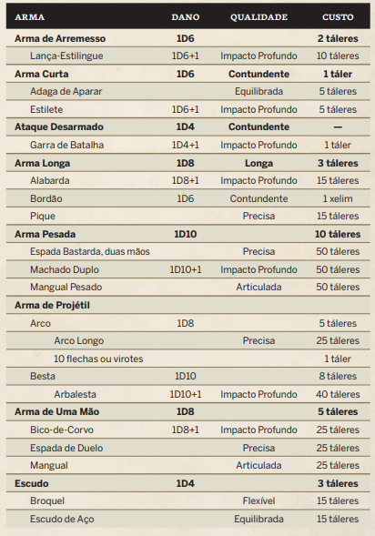

Criação de Personagem
Distribuição / Comprar Pontos:
Distruibuição: Distribua entre 5, 7, 9, 10, 10, 11, 13 e 15
Compras: 80 pts entre os oito Atributos, e claro n pode ser maior doq 15 e nem menor doq 5
Atributos:
ASTUTO Perspicácia, usado para se lembrar de algo, resolver coisas. (Teste Oposto: DT)
DISCRETO Ser silencioso,agil, usado para evitar problema, perseguir alguem, roubar algo no bolso. (Teste Oposto: Vigilancia)
PERSUASIVO Influencia os outros com palavras,voz,aparencia e etc, usadao para persuadir alguem a fazer ou nao algo. (Teste Oposto: Resoluto)
PRECISO Coordenação motora e precisão, usado para acerta alvo com golpes, arremessos, disparos. (Teste Oposto: Rápido)
RÁPIDO Reflexos, Equilibrio e agilidade, usado para determinar a iniciativa em combate e é utilizado evitar ferimentos, manobras, saltos. (Teste Oposto: Preciso)
RESOLUTO Resistencia à influencia, seja social, controle mental ou corrupção. usado tambem para uso de poderes místicos (Teste Oposto: Persuasivo ou Resoluto)
VIGILANTE Prontidão geral, usado para olhos atentos/ sua capacidade de detectar detalhes. (Teste Oposto: Discreto)
VIGOROSO Capacidade da sua Força Fisica, usado para erguer algo pesado, quebrar porta, suportar dores, resistir a venenos e doenças. Alem disso ela determina tambem sua vitalidade. (Teste Oposto: Vigoroso ou DT)
Atributos Secundarios:
VITALIDADE = Vigoroso [Recomendado Nunca seja Abaixo de 10]
LIMIAR DA DOR = Vigoroso/2 [Arredondado pra cima]
DEFESA = Rápido - Obstruitividade da Armadura
LIMIAR DA CORRUPÇÃO = Resoluto/2 [Arredondado pra cima]
Armaduras
| Armadura Leve | Proteção 1d4 | Qualidade | Obstrutiva |
|---|---|---|---|
| Manto da Ordem | - | Flexivel | -2 |
| Pele de Lobo | - | Desajeitada | -2 |
| Robe Abençoado | - | Flexivel | -2 |
| Seda Tecida | - | Flexivel | -2 |
| Toga de Bruxa | - | Flexivel | -2 |
| Armadura Media | Proteção 1d6 | Qualidade | Obstrutiva |
| Armadura de Corvo | - | Desajeitada | -3 |
| Couraça de Seda | - | Flexivel | -3 |
| Armadura Pesada | Proteção 1d8 | Qualidade | Obstrutiva |
| Armadura Completa | - | Flexivel | -4 |
Armas/Equipamentos [Pág 149]
Qualidade dos Equipamentos [Pág 152]
| Qualidade | Efeito | Descrição |
|---|---|---|
| Articulada | Sem modificadores | Não entendi, mucho texto |
| Contundente | -1 passo no dado da arma [exemplo: bastão da 1d6 inves de 1d8] | Nao tem habilidade C ou P. |
| Curta | Sem modificadores | Pode Sacar como ação Livre ou com Fintar |
| Desajeitada | Sem modificadores | Dificil de se mover, logo ganha efeitos negativos em Defesa; Leve (-3 penalidade), Media (-4), Pesada (-5) |
| Equilibrada | Ganha +1 na Defesa | Equilibrio foda. E é mais efetiva quando vc aparar, ai vc ganha o efeito. |
| Flexivel | mucho texto | Não sofre penalidade nos testes de defesa,furtivo e etc. |
| Imapcto Profundo | +1 de Dano | A arma fica mais fodona dos games mortal, pode perfurar armadura. |
| Longa | Ataca de mais longe que o comum (obv né krl é longa a arma) ganha Att Livre. | Ganha att Livre quando alguem esta corpo-a-corpo com vc e nao esteja utilizando uma arma longa tbm. |
| Obstrutiva | Penalidade em Teste de Defesa, furtividade e poderes misticos | Armadura do Ravel, logo tu faz tudo lento pa krl |
| Precisa | +1 em Teste de Att | Arma é facil de enpunhar. |
Raças e Sub-Raças
| Raça | Sub-Raça | Nome Masculino Sugerido | Nome Feminino Sugerido | Traços |
|---|---|---|---|---|
| Elfo | Mediadro, Batedor, Exilado, Vingador | Nomes Masculinos: Alal-Roak, Dorael-Ri, Eloan-Eo, Elori, Godrai, Mearoel, Saran-Ri, TelKeriel, Kil-Ano | Nomes Femininos: Ahara-Vei, Eleanea, Leiána, Gaina-Anali, Keri-Las, Mael-Melian, Naelial, Tara-Kel, Teara-Téana | Vida Longa, Fardo Pária, Sabedoria das Eras(Habilidade) |
| Anão | Sonhos das Perdição, Dívida da Vida, Pária, Espião | Nomes: Artek, Bolkor, Brana, Dobril, Dranek, Dusa, Jarok, Lazek, Margor, Mirek, Radmil, Stana, Vesnek, Vlador, Yaruk | - | Herança Natural, Memória Absoluta, Fardo Pária, Poder Mistico Retribuição (Não gera corrupção) |
| Humano | Ambriano, Bárbaros | Nomes ambrianos masculinos: Aro, Beremo, Demeon, Edogai, Gadramei, Iasogoi, Jomilo, Karlio, Malliano, Peonio. Nomes bárbaros masculinos: Adelar, Gadramon, Haloban, Konarad, Lothar, Odaban, Rábaiamon, Taran, Tharaban, Vikomer | Nomes ambrianos femininos: Abesina, Elindra, Elionara, Levia, Mehira, Ordelia, Revina, Suria, Variol, Vidina. Nomes bárbaros femininos: Adela, Aloeta, Eferneya, Elmea, Elda, Galoma, Horosa, Karona, Verama, Yagaba. | Ambrianos: Contatos ou Privilegiado / Bárbaros: Contatos ou Mateiro |
| Morto-Vivo | mucha coisa | mucha coisa | mucha coisa | mucha coisa |
| Ogro | - | Nomes ogros: Arruaceiro, Bauta, Bocaberta, Boi, Esquisito, Estranho, Feio, Grande Bruto, Imbecil, Nervoso, Pesado, Raiva. | - | Pária, Vida Longa e Robusto |
| Troll | Colecionador de Artefatos, Jornada Educacional | Nomes de Trolls Jovens: Aka, Aroha, Erula, Hibne, Ogmaka, Raham, Riomata, Skadal, Verhar | Nomes de Trolls Velhos ou Poderosos: Aravarx, Etaxa, Noxar, Ognyx, Rirbax, Vouax, Uhux | Armadurado, Arma Natural, Regeneração e Robusto (Habilidade) e mais 300 coisas [Pág 46 Livro 2] |
| Goblin | - | Nomes masculinos: Alfbolg, Barra, Goltas, Illefons, Ler, Rosti, Shigg, Tengel, Ul. | Nomes femininos: Aa, Fosa, Guhula, Hugalea, Tulga, Udelia, Ufa, Wamba, Yla, Yppa | Vida Curta, Pária e Instinto de Sobrevivencia (Habilidade) |
| Humano Sequestrado | Fugitivo | Nome Masculinos: Awan, Beo, Eral, Gaer, Kael, Lo, Mael, Orel,Tham, Tir | Nomes Femininos: Anga, Beha, Erli, Fera, Inda, Lonam, Una, Undi, Vird | Resistência, Força Física |
| Cambiante | - | Nomes masculinos: Aka, Ardri, Eneáno, Feon, Ganderald, Goriol, Ibliglin, Kalfu, Radomaramei, Sinue. | Nomes cambiantes femininos: Bekora, Danive, Yeloéna, Elorinda, Hinéua, Kinlegelana, Riamata, Roha, Seanua, Varaneia. | Vida Longa, Metamordo (Habilidade) |
Arquétipos e Habilidades
| Arquétipo | Habilidade | Trilha |
|---|---|---|
| Guerreiro | Dominação, Líder, Ataque Gêmeo, Combatente de Escudo, Força da Empunhadura Dupla, Maestria em Armas de Haste, Acrobacias, Saque Rápido, Guarda-Costas, Inabalável, Punho de Ferro, Atributo Excepcional, Amoque, Equestre, Homem-de-Armas, Recuperação | Amoque, Capitão, Cavaleiro, Duelista, Mercenário |
| Mistico | Alquimia, Médico, Mestre do Saber, Saber de Bestas, Dominação, Líder, Guerreiro Natural, Maestria em Armas de Haste, Acrobacias, Inabalável, Poder Místico, Sexto Sentido, Visão de Bruxa, Atributo Excepcional, Amoque, Bruxaria, Feitiçaria, Magismo, Recuperação, Ritualista, Teurgia | Bruxa, Feiticeiro, Mago, Místico Autodidata, Teugo |
| Ladino | Alquimia, Estrangulador, Médico, Mestre do Saber, Saber de Besta, Tático, Veneficista, Ataque Furtivo, Finta, Dominação, Líder, Ataque Gêmeo, Atirador, Arremessar Aço, Guerreiro Natural, Maestria em Armas de Haste, Acrobacias, Saque Rápido, Inabalável, Sexto Sentido, Visão de Bruxa, Atributo Excepcional, Equestre, Recuperação, Ritualista | Bandido, Caçador de Bruxas, Caçador de Tesouro, Charlatão, Patrulheiro |
| Caçador | Mucha Coisa | Mucha Coisa |